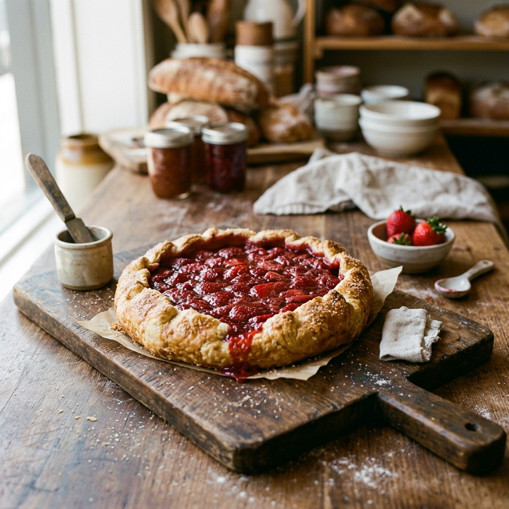
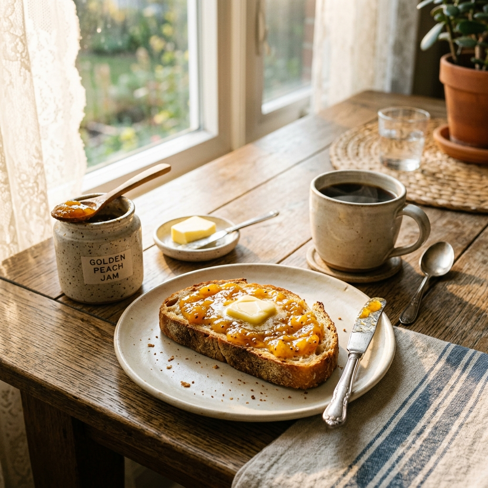

Nuestras mermeladas y conservas son versátiles, originales y deliciosas en cualquier momento del día.

Una masa sableé crujiente rellena con nuestra abundante mermelada de frutilla. Perfecta para la hora del té.

Pan artesanal tostado con queso de cabra cremoso y mermelada de tomate. Un contraste agridulce espectacular.

Mermelada de ciruela, salsa de soja y mostaza para un glaseado irresistible. El pollo más pedido en reuniones.

El maridaje perfecto. Quesos maduros, frutos secos y nuestra mermelada de higo para reuniones especiales.

Pan casero tibio, manteca y nuestra mermelada de durazno. El sabor del verano para empezar el día con todo.